People workspace: implemented locally
Actual screenshots from local SAML and MongoDB acceptance. Synthetic course and student fixtures are removed after each test.
Verified: 2,051 unit tests; 13 related UI regressions; real SAML/Mongo acceptance; scoped desktop/mobile light/dark WCAG A/AA.
Acceptance checks include role replacement, stale revisions, cross-course isolation, ban persistence across Gradebook refresh, code rejection for banned users, Share role selection, clipboard copying and new-student receipts.
Gradebook re-upload: new people before import
The preview compares exact Login IDs with the previous CSV snapshot. Late Joiner Alice and Ben are named as new people; existing students are unchanged.
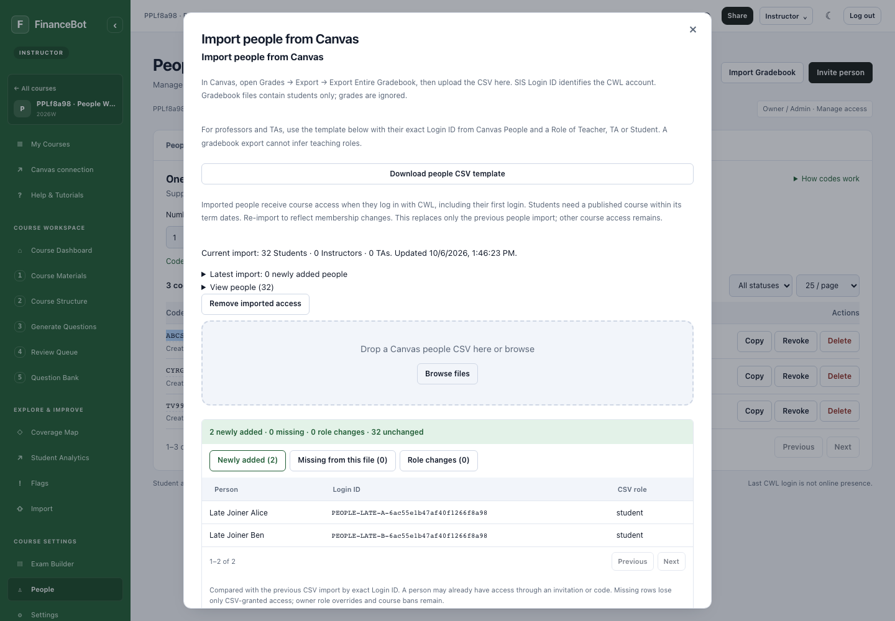
New people after confirmation
The same change receipt is retained after commit and when reopening the import dialog. Longer lists are paginated.
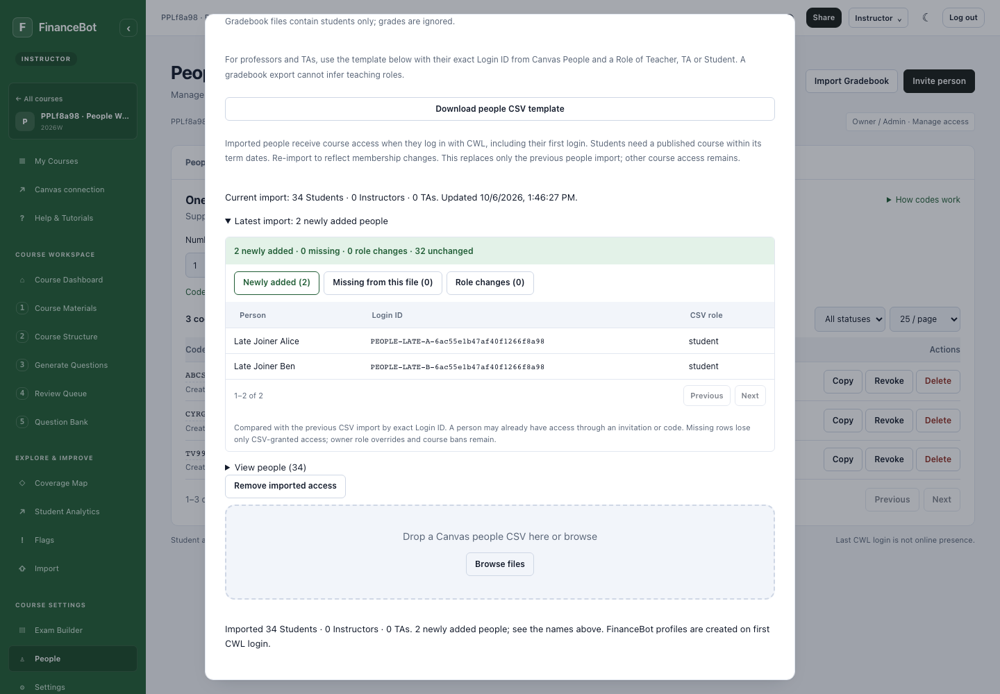
One unified People directory
Student, TA and Instructor identities share a searchable table with course role, CWL / Login ID, source, status and last sign-in. Lists use server-side 10 / 25 / 50-row pages.
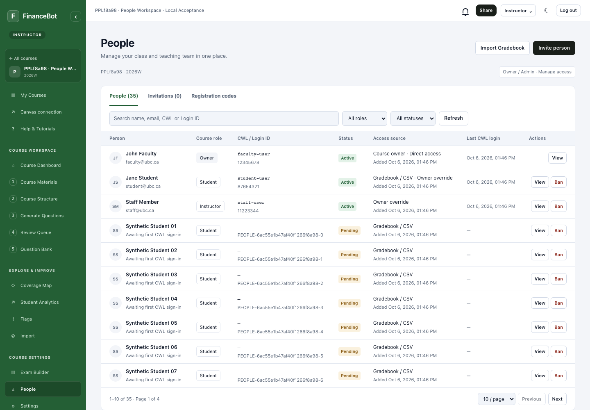
Search and pagination
Search by name, UBC email, CWL or exact Login ID. Only the requested page is sent to the browser.
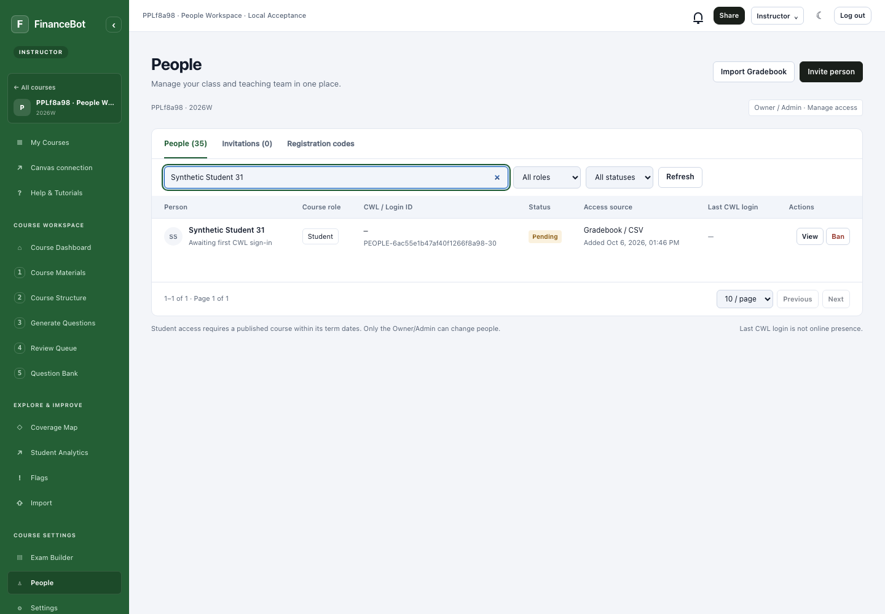
Share: choose role before inviting
The topbar Share button and Invite person use the same form. Choose Student, TA or Instructor; TA permissions can be selected before activation.
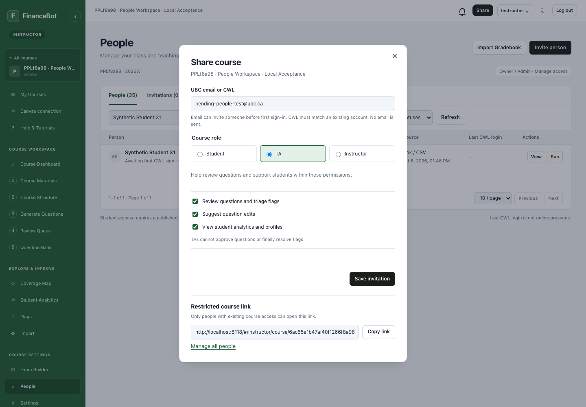
Pending invitations
Email invitations await a unique matching CWL sign-in. Known CWL identities receive course access immediately. No email is sent.
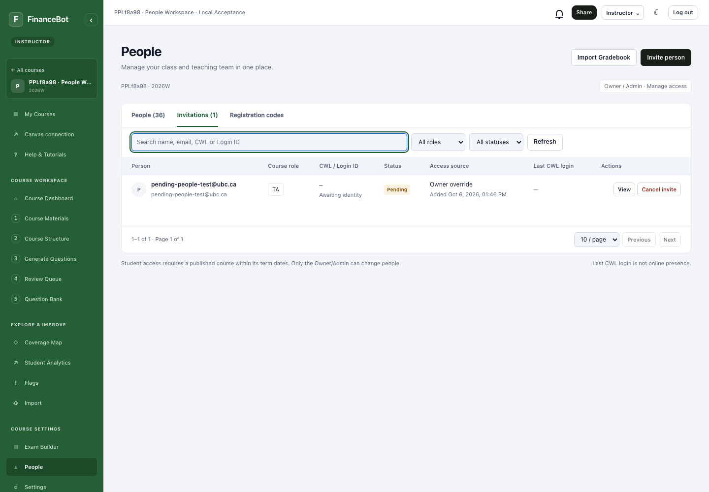
Click code to copy
The code text is a keyboard-accessible copy button. Copy success is visible. Existing code pagination, revoke and record deletion remain available.
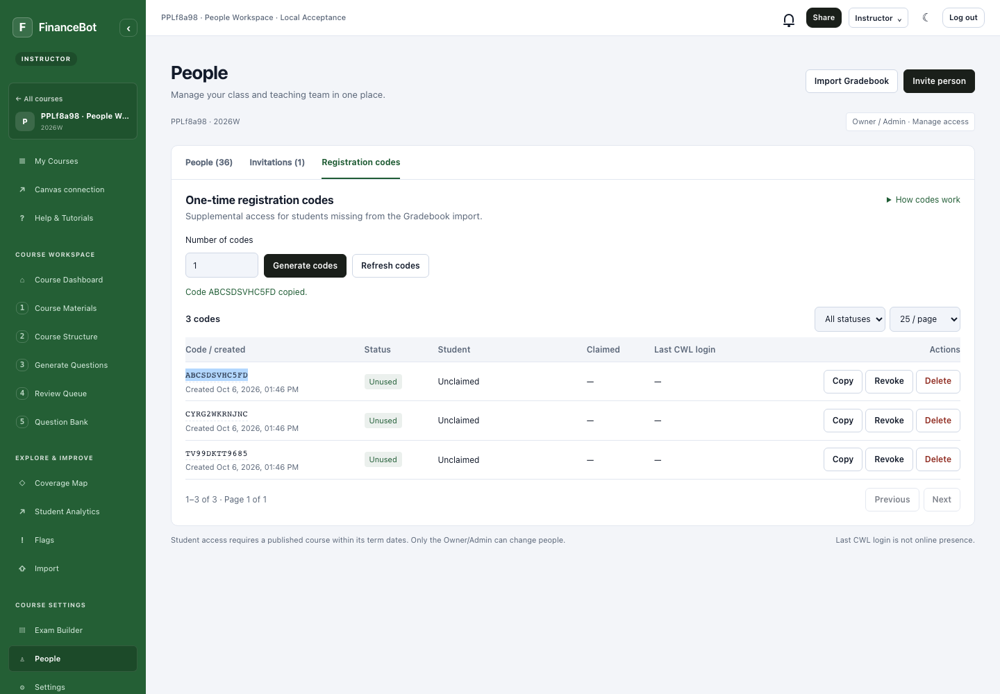
Change a person’s course role
Owner/Admin can change the role in a native dialog. The decision overrides CSV, Canvas and legacy invitations for this course only.
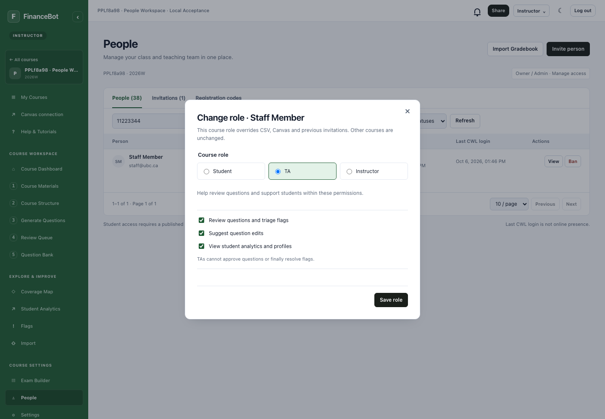
Durable course ban
A banned person loses this course’s access on their next authenticated request. Re-import does not restore access. Learning records and other courses remain.
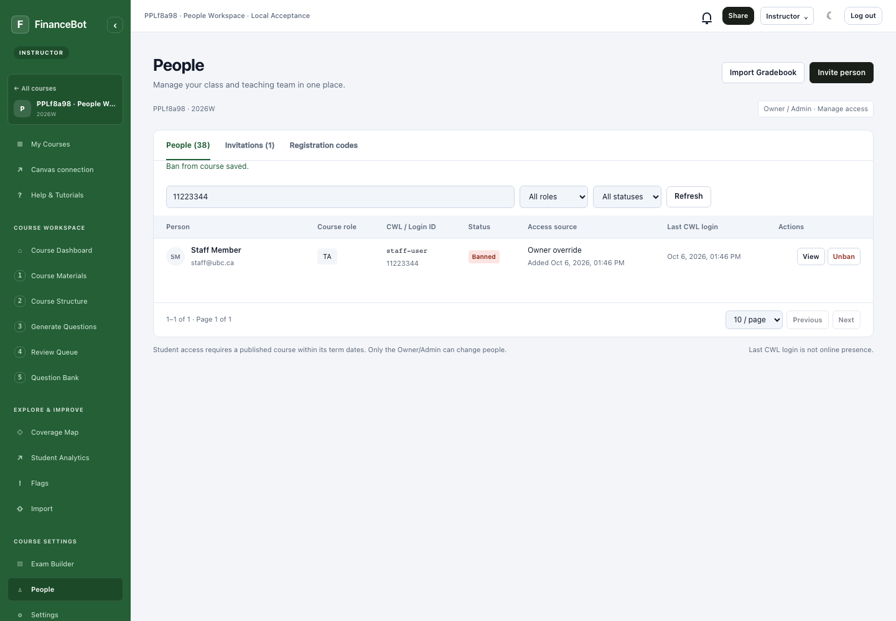
Dark appearance
The workspace uses the existing FinanceBot design tokens. Local WCAG A/AA checks pass.
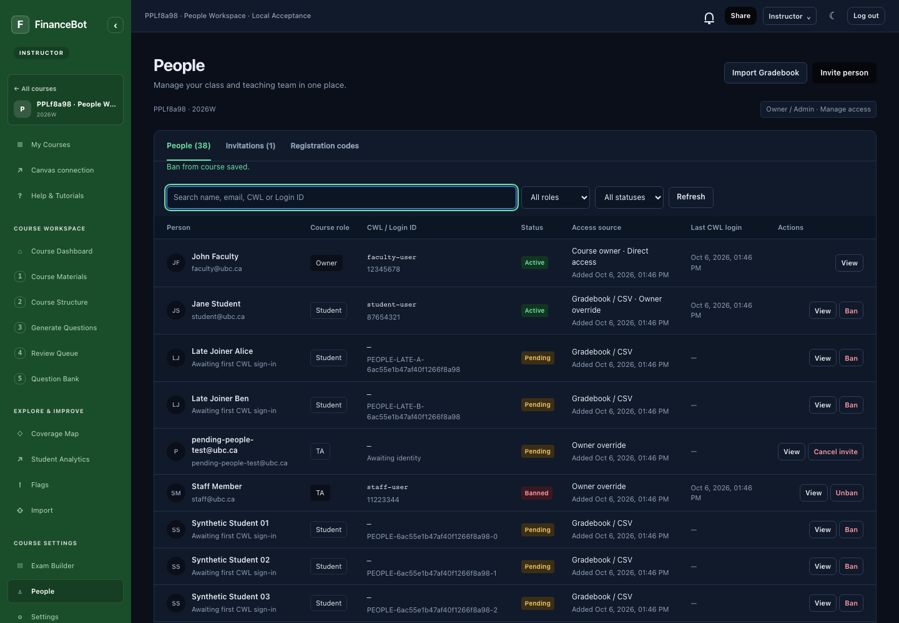
Compact mobile layout
The directory collapses into compact rows and retains search, role/status filters and pagination without horizontal page overflow.
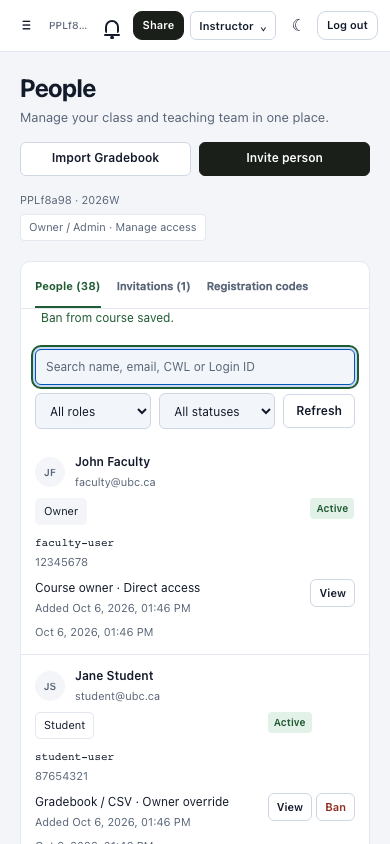